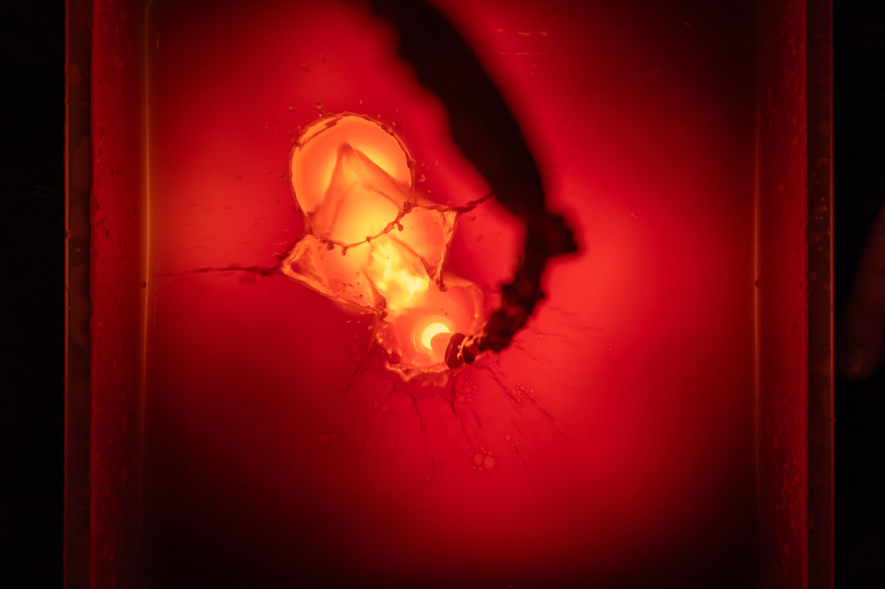
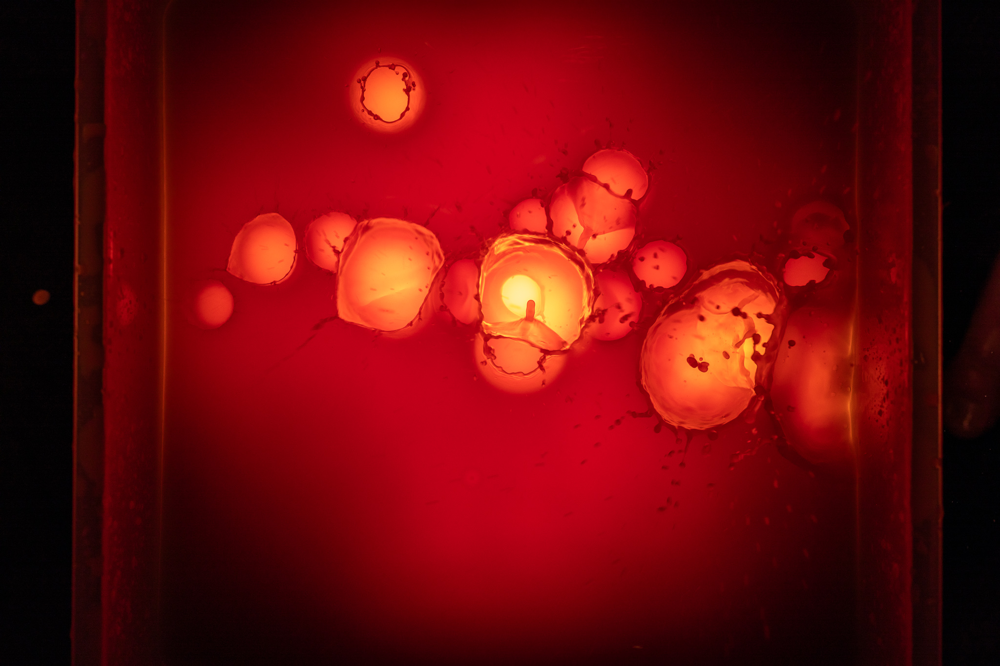
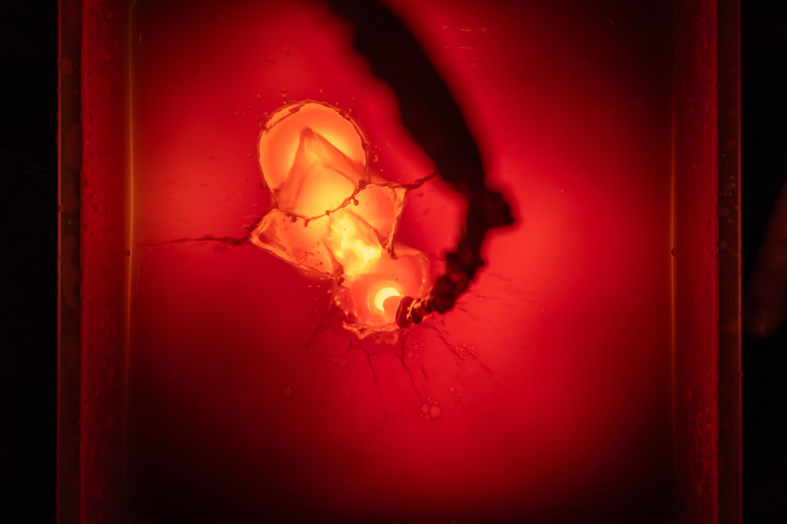
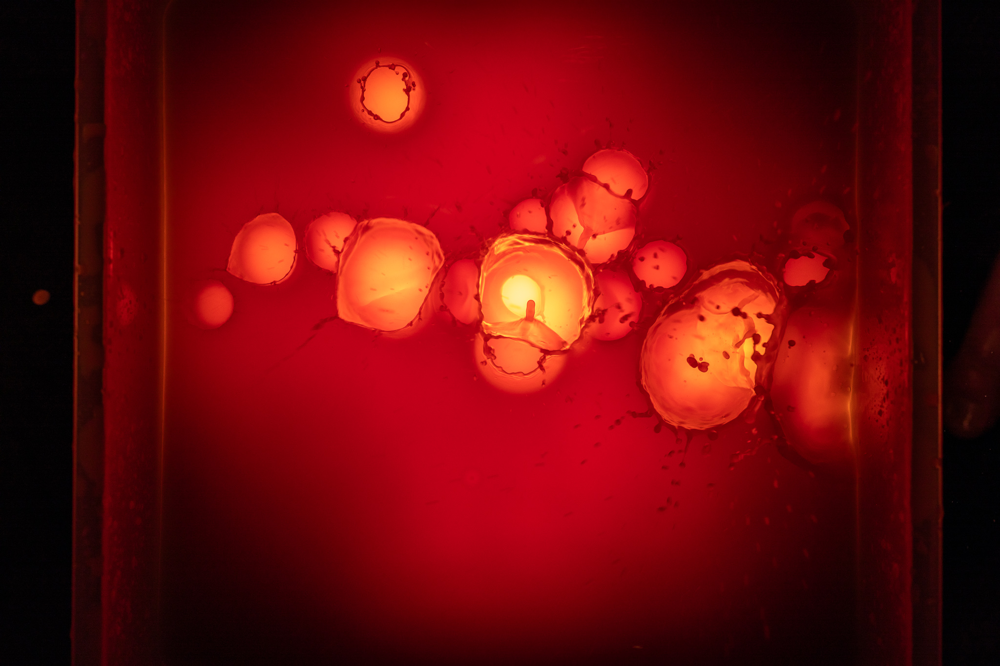
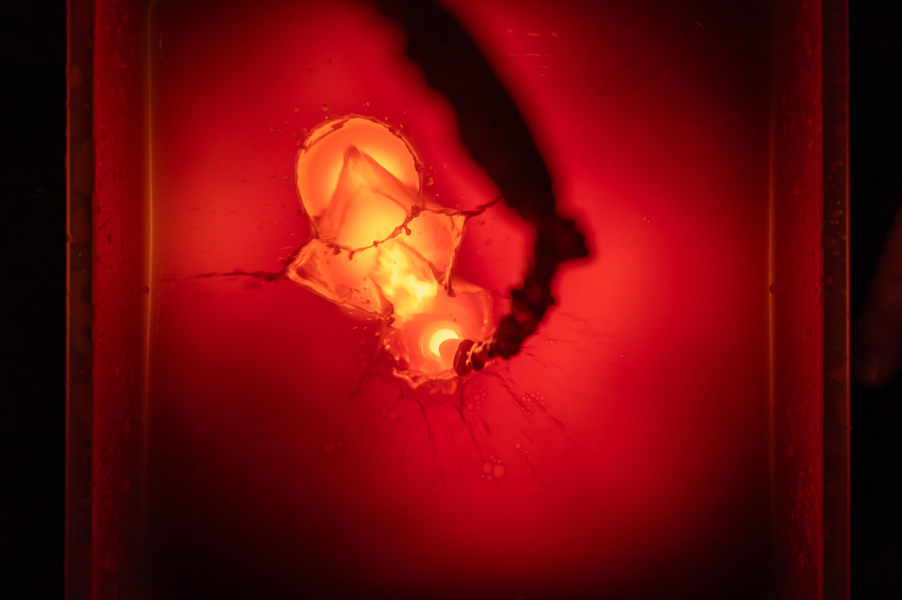
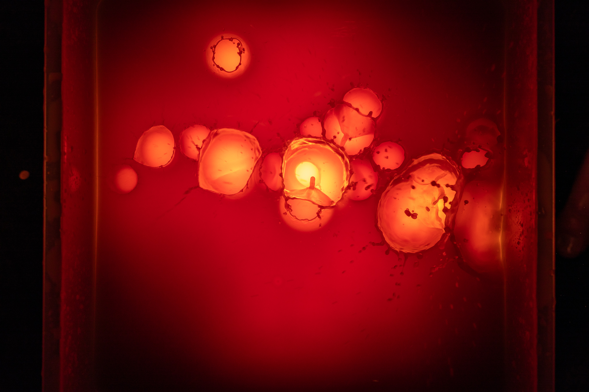

1. Control of Lighting Environment (High-Speed Sync Flashes, High Shutter Speed, Dark Room).
2. Backlighting for "Nebulas" to capture the depth of shape and color while minimizing reflections.
3. Top-Down Tripod Setup with Macro Lens for maximum resolution and detail, given the square image orientation desired and digital techniques to follow.
4. Utilize color channel, layered image stacking, luminance and image application tools to perform frequency separation and allow for explosive depths of color through additive, difference, multiplicative, and linear imaging tools.
5. Finalized works should bridge, and challenge, the gaps between several 'accepted' artforms to contrast with dissmisive takes on digital forms: painting (watercolor, oil, acrylic), photography (analog), sculpture (dimensional shaping of form, manaul and physical process).


 


